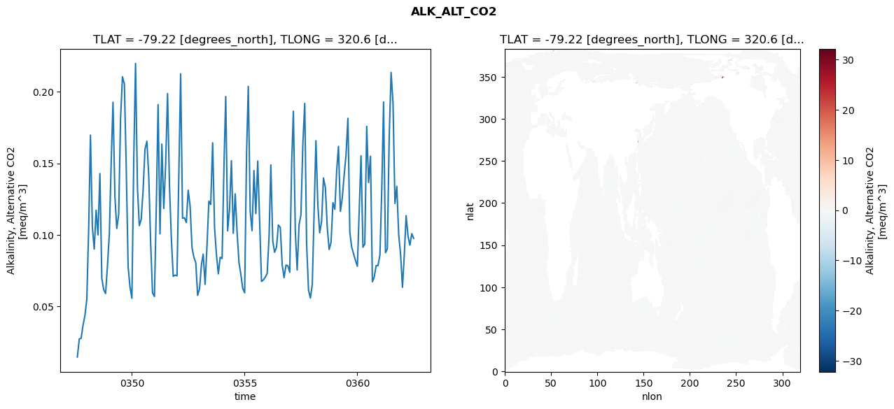
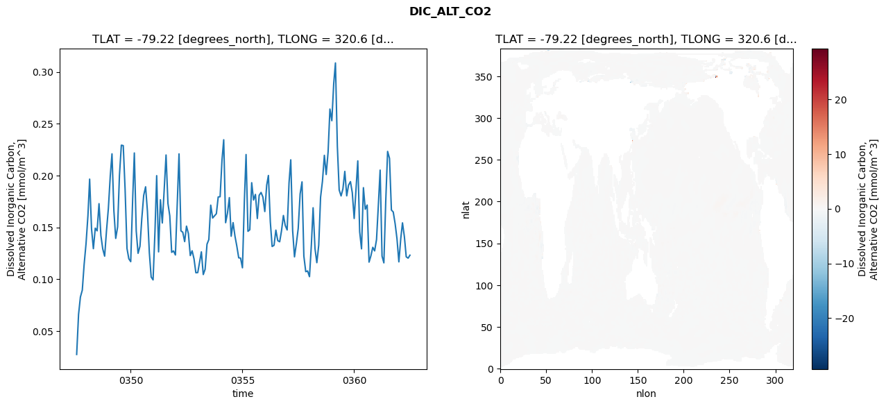
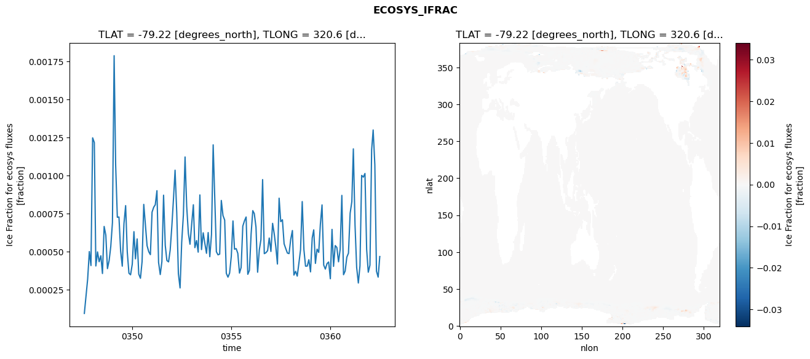
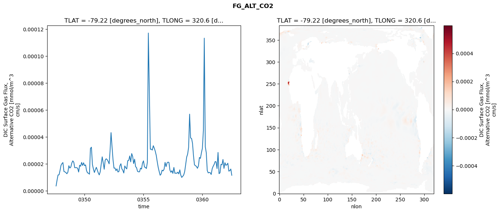

glb-dor_North_Atlantic_basin_026_1999-07-01_00106#
Simulation details#
Case: smyle.cdr-atlas-v0.glb-dor_North_Atlantic_basin_026_1999-07-01_00106.001
Basin: North_Atlantic_basin
Polygon: 26.0
Start date: 1999-07
Show code cell source Hide code cell source
import xarray as xr
import matplotlib.pyplot as plt
Show code cell source Hide code cell source
zarr_store = "/path/to/zarr/store"
# Parameters
zarr_store = "/global/cfs/projectdirs/m4746/Projects/Ocean-CDR-Atlas-v0/data/validation/smyle.cdr-atlas-v0.glb-dor_North_Atlantic_basin_026_1999-07-01_00106.001.validation.zarr"
Show code cell source Hide code cell source
%%time
ds_o = xr.open_zarr(zarr_store).compute()
ds_o
CPU times: user 622 ms, sys: 451 ms, total: 1.07 s
Wall time: 1.36 s
<xarray.Dataset> Size: 2MB
Dimensions: (nlat: 384, nlon: 320, time: 180)
Coordinates:
TLAT float64 8B -79.22
TLONG float64 8B 320.6
ULAT float64 8B -78.95
ULONG float64 8B 321.1
* time (time) object 1kB 0347-08-01 00:00:00 ... 0362-07-01 0...
z_t float32 4B 500.0
Dimensions without coordinates: nlat, nlon
Data variables:
ALK_ALT_CO2_diff (nlat, nlon) float32 492kB nan nan nan ... nan nan nan
ALK_ALT_CO2_rmse (time) float64 1kB 0.01441 0.02708 ... 0.1008 0.0975
DIC_ALT_CO2_diff (nlat, nlon) float32 492kB nan nan nan ... nan nan nan
DIC_ALT_CO2_rmse (time) float64 1kB 0.02731 0.06595 ... 0.1203 0.1231
ECOSYS_IFRAC_diff (nlat, nlon) float32 492kB nan nan nan ... nan nan nan
ECOSYS_IFRAC_rmse (time) float64 1kB 9.353e-05 0.0002067 ... 0.0004675
FG_ALT_CO2_diff (nlat, nlon) float32 492kB nan nan nan ... nan nan nan
FG_ALT_CO2_rmse (time) float64 1kB 3.603e-06 8.009e-06 ... 1.151e-05xarray.Dataset
- nlat: 384
- nlon: 320
- time: 180
- TLAT()float64-79.22
- long_name :
- array of t-grid latitudes
- units :
- degrees_north
array(-79.22052261)
- TLONG()float64320.6
- long_name :
- array of t-grid longitudes
- units :
- degrees_east
array(320.56250892)
- ULAT()float64-78.95
- long_name :
- array of u-grid latitudes
- units :
- degrees_north
array(-78.95289509)
- ULONG()float64321.1
- long_name :
- array of u-grid longitudes
- units :
- degrees_east
array(321.12500894)
- time(time)object0347-08-01 00:00:00 ... 0362-07-...
- bounds :
- time_bound
- long_name :
- time
array([cftime.DatetimeNoLeap(347, 8, 1, 0, 0, 0, 0, has_year_zero=True), cftime.DatetimeNoLeap(347, 9, 1, 0, 0, 0, 0, has_year_zero=True), cftime.DatetimeNoLeap(347, 10, 1, 0, 0, 0, 0, has_year_zero=True), cftime.DatetimeNoLeap(347, 11, 1, 0, 0, 0, 0, has_year_zero=True), cftime.DatetimeNoLeap(347, 12, 1, 0, 0, 0, 0, has_year_zero=True), cftime.DatetimeNoLeap(348, 1, 1, 0, 0, 0, 0, has_year_zero=True), cftime.DatetimeNoLeap(348, 2, 1, 0, 0, 0, 0, has_year_zero=True), cftime.DatetimeNoLeap(348, 3, 1, 0, 0, 0, 0, has_year_zero=True), cftime.DatetimeNoLeap(348, 4, 1, 0, 0, 0, 0, has_year_zero=True), cftime.DatetimeNoLeap(348, 5, 1, 0, 0, 0, 0, has_year_zero=True), cftime.DatetimeNoLeap(348, 6, 1, 0, 0, 0, 0, has_year_zero=True), cftime.DatetimeNoLeap(348, 7, 1, 0, 0, 0, 0, has_year_zero=True), cftime.DatetimeNoLeap(348, 8, 1, 0, 0, 0, 0, has_year_zero=True), cftime.DatetimeNoLeap(348, 9, 1, 0, 0, 0, 0, has_year_zero=True), cftime.DatetimeNoLeap(348, 10, 1, 0, 0, 0, 0, has_year_zero=True), cftime.DatetimeNoLeap(348, 11, 1, 0, 0, 0, 0, has_year_zero=True), cftime.DatetimeNoLeap(348, 12, 1, 0, 0, 0, 0, has_year_zero=True), cftime.DatetimeNoLeap(349, 1, 1, 0, 0, 0, 0, has_year_zero=True), cftime.DatetimeNoLeap(349, 2, 1, 0, 0, 0, 0, has_year_zero=True), cftime.DatetimeNoLeap(349, 3, 1, 0, 0, 0, 0, has_year_zero=True), cftime.DatetimeNoLeap(349, 4, 1, 0, 0, 0, 0, has_year_zero=True), cftime.DatetimeNoLeap(349, 5, 1, 0, 0, 0, 0, has_year_zero=True), cftime.DatetimeNoLeap(349, 6, 1, 0, 0, 0, 0, has_year_zero=True), cftime.DatetimeNoLeap(349, 7, 1, 0, 0, 0, 0, has_year_zero=True), cftime.DatetimeNoLeap(349, 8, 1, 0, 0, 0, 0, has_year_zero=True), cftime.DatetimeNoLeap(349, 9, 1, 0, 0, 0, 0, has_year_zero=True), cftime.DatetimeNoLeap(349, 10, 1, 0, 0, 0, 0, has_year_zero=True), cftime.DatetimeNoLeap(349, 11, 1, 0, 0, 0, 0, has_year_zero=True), cftime.DatetimeNoLeap(349, 12, 1, 0, 0, 0, 0, has_year_zero=True), cftime.DatetimeNoLeap(350, 1, 1, 0, 0, 0, 0, has_year_zero=True), cftime.DatetimeNoLeap(350, 2, 1, 0, 0, 0, 0, has_year_zero=True), cftime.DatetimeNoLeap(350, 3, 1, 0, 0, 0, 0, has_year_zero=True), cftime.DatetimeNoLeap(350, 4, 1, 0, 0, 0, 0, has_year_zero=True), cftime.DatetimeNoLeap(350, 5, 1, 0, 0, 0, 0, has_year_zero=True), cftime.DatetimeNoLeap(350, 6, 1, 0, 0, 0, 0, has_year_zero=True), cftime.DatetimeNoLeap(350, 7, 1, 0, 0, 0, 0, has_year_zero=True), cftime.DatetimeNoLeap(350, 8, 1, 0, 0, 0, 0, has_year_zero=True), cftime.DatetimeNoLeap(350, 9, 1, 0, 0, 0, 0, has_year_zero=True), cftime.DatetimeNoLeap(350, 10, 1, 0, 0, 0, 0, has_year_zero=True), cftime.DatetimeNoLeap(350, 11, 1, 0, 0, 0, 0, has_year_zero=True), cftime.DatetimeNoLeap(350, 12, 1, 0, 0, 0, 0, has_year_zero=True), cftime.DatetimeNoLeap(351, 1, 1, 0, 0, 0, 0, has_year_zero=True), cftime.DatetimeNoLeap(351, 2, 1, 0, 0, 0, 0, has_year_zero=True), cftime.DatetimeNoLeap(351, 3, 1, 0, 0, 0, 0, has_year_zero=True), cftime.DatetimeNoLeap(351, 4, 1, 0, 0, 0, 0, has_year_zero=True), cftime.DatetimeNoLeap(351, 5, 1, 0, 0, 0, 0, has_year_zero=True), cftime.DatetimeNoLeap(351, 6, 1, 0, 0, 0, 0, has_year_zero=True), cftime.DatetimeNoLeap(351, 7, 1, 0, 0, 0, 0, has_year_zero=True), cftime.DatetimeNoLeap(351, 8, 1, 0, 0, 0, 0, has_year_zero=True), cftime.DatetimeNoLeap(351, 9, 1, 0, 0, 0, 0, has_year_zero=True), cftime.DatetimeNoLeap(351, 10, 1, 0, 0, 0, 0, has_year_zero=True), cftime.DatetimeNoLeap(351, 11, 1, 0, 0, 0, 0, has_year_zero=True), cftime.DatetimeNoLeap(351, 12, 1, 0, 0, 0, 0, has_year_zero=True), cftime.DatetimeNoLeap(352, 1, 1, 0, 0, 0, 0, has_year_zero=True), cftime.DatetimeNoLeap(352, 2, 1, 0, 0, 0, 0, has_year_zero=True), cftime.DatetimeNoLeap(352, 3, 1, 0, 0, 0, 0, has_year_zero=True), cftime.DatetimeNoLeap(352, 4, 1, 0, 0, 0, 0, has_year_zero=True), cftime.DatetimeNoLeap(352, 5, 1, 0, 0, 0, 0, has_year_zero=True), cftime.DatetimeNoLeap(352, 6, 1, 0, 0, 0, 0, has_year_zero=True), cftime.DatetimeNoLeap(352, 7, 1, 0, 0, 0, 0, has_year_zero=True), cftime.DatetimeNoLeap(352, 8, 1, 0, 0, 0, 0, has_year_zero=True), cftime.DatetimeNoLeap(352, 9, 1, 0, 0, 0, 0, has_year_zero=True), cftime.DatetimeNoLeap(352, 10, 1, 0, 0, 0, 0, has_year_zero=True), cftime.DatetimeNoLeap(352, 11, 1, 0, 0, 0, 0, has_year_zero=True), cftime.DatetimeNoLeap(352, 12, 1, 0, 0, 0, 0, has_year_zero=True), cftime.DatetimeNoLeap(353, 1, 1, 0, 0, 0, 0, has_year_zero=True), cftime.DatetimeNoLeap(353, 2, 1, 0, 0, 0, 0, has_year_zero=True), cftime.DatetimeNoLeap(353, 3, 1, 0, 0, 0, 0, has_year_zero=True), cftime.DatetimeNoLeap(353, 4, 1, 0, 0, 0, 0, has_year_zero=True), cftime.DatetimeNoLeap(353, 5, 1, 0, 0, 0, 0, has_year_zero=True), cftime.DatetimeNoLeap(353, 6, 1, 0, 0, 0, 0, has_year_zero=True), cftime.DatetimeNoLeap(353, 7, 1, 0, 0, 0, 0, has_year_zero=True), cftime.DatetimeNoLeap(353, 8, 1, 0, 0, 0, 0, has_year_zero=True), cftime.DatetimeNoLeap(353, 9, 1, 0, 0, 0, 0, has_year_zero=True), cftime.DatetimeNoLeap(353, 10, 1, 0, 0, 0, 0, has_year_zero=True), cftime.DatetimeNoLeap(353, 11, 1, 0, 0, 0, 0, has_year_zero=True), cftime.DatetimeNoLeap(353, 12, 1, 0, 0, 0, 0, has_year_zero=True), cftime.DatetimeNoLeap(354, 1, 1, 0, 0, 0, 0, has_year_zero=True), cftime.DatetimeNoLeap(354, 2, 1, 0, 0, 0, 0, has_year_zero=True), cftime.DatetimeNoLeap(354, 3, 1, 0, 0, 0, 0, has_year_zero=True), cftime.DatetimeNoLeap(354, 4, 1, 0, 0, 0, 0, has_year_zero=True), cftime.DatetimeNoLeap(354, 5, 1, 0, 0, 0, 0, has_year_zero=True), cftime.DatetimeNoLeap(354, 6, 1, 0, 0, 0, 0, has_year_zero=True), cftime.DatetimeNoLeap(354, 7, 1, 0, 0, 0, 0, has_year_zero=True), cftime.DatetimeNoLeap(354, 8, 1, 0, 0, 0, 0, has_year_zero=True), cftime.DatetimeNoLeap(354, 9, 1, 0, 0, 0, 0, has_year_zero=True), cftime.DatetimeNoLeap(354, 10, 1, 0, 0, 0, 0, has_year_zero=True), cftime.DatetimeNoLeap(354, 11, 1, 0, 0, 0, 0, has_year_zero=True), cftime.DatetimeNoLeap(354, 12, 1, 0, 0, 0, 0, has_year_zero=True), cftime.DatetimeNoLeap(355, 1, 1, 0, 0, 0, 0, has_year_zero=True), cftime.DatetimeNoLeap(355, 2, 1, 0, 0, 0, 0, has_year_zero=True), cftime.DatetimeNoLeap(355, 3, 1, 0, 0, 0, 0, has_year_zero=True), cftime.DatetimeNoLeap(355, 4, 1, 0, 0, 0, 0, has_year_zero=True), cftime.DatetimeNoLeap(355, 5, 1, 0, 0, 0, 0, has_year_zero=True), cftime.DatetimeNoLeap(355, 6, 1, 0, 0, 0, 0, has_year_zero=True), cftime.DatetimeNoLeap(355, 7, 1, 0, 0, 0, 0, has_year_zero=True), cftime.DatetimeNoLeap(355, 8, 1, 0, 0, 0, 0, has_year_zero=True), cftime.DatetimeNoLeap(355, 9, 1, 0, 0, 0, 0, has_year_zero=True), cftime.DatetimeNoLeap(355, 10, 1, 0, 0, 0, 0, has_year_zero=True), cftime.DatetimeNoLeap(355, 11, 1, 0, 0, 0, 0, has_year_zero=True), cftime.DatetimeNoLeap(355, 12, 1, 0, 0, 0, 0, has_year_zero=True), cftime.DatetimeNoLeap(356, 1, 1, 0, 0, 0, 0, has_year_zero=True), cftime.DatetimeNoLeap(356, 2, 1, 0, 0, 0, 0, has_year_zero=True), cftime.DatetimeNoLeap(356, 3, 1, 0, 0, 0, 0, has_year_zero=True), cftime.DatetimeNoLeap(356, 4, 1, 0, 0, 0, 0, has_year_zero=True), cftime.DatetimeNoLeap(356, 5, 1, 0, 0, 0, 0, has_year_zero=True), cftime.DatetimeNoLeap(356, 6, 1, 0, 0, 0, 0, has_year_zero=True), cftime.DatetimeNoLeap(356, 7, 1, 0, 0, 0, 0, has_year_zero=True), cftime.DatetimeNoLeap(356, 8, 1, 0, 0, 0, 0, has_year_zero=True), cftime.DatetimeNoLeap(356, 9, 1, 0, 0, 0, 0, has_year_zero=True), cftime.DatetimeNoLeap(356, 10, 1, 0, 0, 0, 0, has_year_zero=True), cftime.DatetimeNoLeap(356, 11, 1, 0, 0, 0, 0, has_year_zero=True), cftime.DatetimeNoLeap(356, 12, 1, 0, 0, 0, 0, has_year_zero=True), cftime.DatetimeNoLeap(357, 1, 1, 0, 0, 0, 0, has_year_zero=True), cftime.DatetimeNoLeap(357, 2, 1, 0, 0, 0, 0, has_year_zero=True), cftime.DatetimeNoLeap(357, 3, 1, 0, 0, 0, 0, has_year_zero=True), cftime.DatetimeNoLeap(357, 4, 1, 0, 0, 0, 0, has_year_zero=True), cftime.DatetimeNoLeap(357, 5, 1, 0, 0, 0, 0, has_year_zero=True), cftime.DatetimeNoLeap(357, 6, 1, 0, 0, 0, 0, has_year_zero=True), cftime.DatetimeNoLeap(357, 7, 1, 0, 0, 0, 0, has_year_zero=True), cftime.DatetimeNoLeap(357, 8, 1, 0, 0, 0, 0, has_year_zero=True), cftime.DatetimeNoLeap(357, 9, 1, 0, 0, 0, 0, has_year_zero=True), cftime.DatetimeNoLeap(357, 10, 1, 0, 0, 0, 0, has_year_zero=True), cftime.DatetimeNoLeap(357, 11, 1, 0, 0, 0, 0, has_year_zero=True), cftime.DatetimeNoLeap(357, 12, 1, 0, 0, 0, 0, has_year_zero=True), cftime.DatetimeNoLeap(358, 1, 1, 0, 0, 0, 0, has_year_zero=True), cftime.DatetimeNoLeap(358, 2, 1, 0, 0, 0, 0, has_year_zero=True), cftime.DatetimeNoLeap(358, 3, 1, 0, 0, 0, 0, has_year_zero=True), cftime.DatetimeNoLeap(358, 4, 1, 0, 0, 0, 0, has_year_zero=True), cftime.DatetimeNoLeap(358, 5, 1, 0, 0, 0, 0, has_year_zero=True), cftime.DatetimeNoLeap(358, 6, 1, 0, 0, 0, 0, has_year_zero=True), cftime.DatetimeNoLeap(358, 7, 1, 0, 0, 0, 0, has_year_zero=True), cftime.DatetimeNoLeap(358, 8, 1, 0, 0, 0, 0, has_year_zero=True), cftime.DatetimeNoLeap(358, 9, 1, 0, 0, 0, 0, has_year_zero=True), cftime.DatetimeNoLeap(358, 10, 1, 0, 0, 0, 0, has_year_zero=True), cftime.DatetimeNoLeap(358, 11, 1, 0, 0, 0, 0, has_year_zero=True), cftime.DatetimeNoLeap(358, 12, 1, 0, 0, 0, 0, has_year_zero=True), cftime.DatetimeNoLeap(359, 1, 1, 0, 0, 0, 0, has_year_zero=True), cftime.DatetimeNoLeap(359, 2, 1, 0, 0, 0, 0, has_year_zero=True), cftime.DatetimeNoLeap(359, 3, 1, 0, 0, 0, 0, has_year_zero=True), cftime.DatetimeNoLeap(359, 4, 1, 0, 0, 0, 0, has_year_zero=True), cftime.DatetimeNoLeap(359, 5, 1, 0, 0, 0, 0, has_year_zero=True), cftime.DatetimeNoLeap(359, 6, 1, 0, 0, 0, 0, has_year_zero=True), cftime.DatetimeNoLeap(359, 7, 1, 0, 0, 0, 0, has_year_zero=True), cftime.DatetimeNoLeap(359, 8, 1, 0, 0, 0, 0, has_year_zero=True), cftime.DatetimeNoLeap(359, 9, 1, 0, 0, 0, 0, has_year_zero=True), cftime.DatetimeNoLeap(359, 10, 1, 0, 0, 0, 0, has_year_zero=True), cftime.DatetimeNoLeap(359, 11, 1, 0, 0, 0, 0, has_year_zero=True), cftime.DatetimeNoLeap(359, 12, 1, 0, 0, 0, 0, has_year_zero=True), cftime.DatetimeNoLeap(360, 1, 1, 0, 0, 0, 0, has_year_zero=True), cftime.DatetimeNoLeap(360, 2, 1, 0, 0, 0, 0, has_year_zero=True), cftime.DatetimeNoLeap(360, 3, 1, 0, 0, 0, 0, has_year_zero=True), cftime.DatetimeNoLeap(360, 4, 1, 0, 0, 0, 0, has_year_zero=True), cftime.DatetimeNoLeap(360, 5, 1, 0, 0, 0, 0, has_year_zero=True), cftime.DatetimeNoLeap(360, 6, 1, 0, 0, 0, 0, has_year_zero=True), cftime.DatetimeNoLeap(360, 7, 1, 0, 0, 0, 0, has_year_zero=True), cftime.DatetimeNoLeap(360, 8, 1, 0, 0, 0, 0, has_year_zero=True), cftime.DatetimeNoLeap(360, 9, 1, 0, 0, 0, 0, has_year_zero=True), cftime.DatetimeNoLeap(360, 10, 1, 0, 0, 0, 0, has_year_zero=True), cftime.DatetimeNoLeap(360, 11, 1, 0, 0, 0, 0, has_year_zero=True), cftime.DatetimeNoLeap(360, 12, 1, 0, 0, 0, 0, has_year_zero=True), cftime.DatetimeNoLeap(361, 1, 1, 0, 0, 0, 0, has_year_zero=True), cftime.DatetimeNoLeap(361, 2, 1, 0, 0, 0, 0, has_year_zero=True), cftime.DatetimeNoLeap(361, 3, 1, 0, 0, 0, 0, has_year_zero=True), cftime.DatetimeNoLeap(361, 4, 1, 0, 0, 0, 0, has_year_zero=True), cftime.DatetimeNoLeap(361, 5, 1, 0, 0, 0, 0, has_year_zero=True), cftime.DatetimeNoLeap(361, 6, 1, 0, 0, 0, 0, has_year_zero=True), cftime.DatetimeNoLeap(361, 7, 1, 0, 0, 0, 0, has_year_zero=True), cftime.DatetimeNoLeap(361, 8, 1, 0, 0, 0, 0, has_year_zero=True), cftime.DatetimeNoLeap(361, 9, 1, 0, 0, 0, 0, has_year_zero=True), cftime.DatetimeNoLeap(361, 10, 1, 0, 0, 0, 0, has_year_zero=True), cftime.DatetimeNoLeap(361, 11, 1, 0, 0, 0, 0, has_year_zero=True), cftime.DatetimeNoLeap(361, 12, 1, 0, 0, 0, 0, has_year_zero=True), cftime.DatetimeNoLeap(362, 1, 1, 0, 0, 0, 0, has_year_zero=True), cftime.DatetimeNoLeap(362, 2, 1, 0, 0, 0, 0, has_year_zero=True), cftime.DatetimeNoLeap(362, 3, 1, 0, 0, 0, 0, has_year_zero=True), cftime.DatetimeNoLeap(362, 4, 1, 0, 0, 0, 0, has_year_zero=True), cftime.DatetimeNoLeap(362, 5, 1, 0, 0, 0, 0, has_year_zero=True), cftime.DatetimeNoLeap(362, 6, 1, 0, 0, 0, 0, has_year_zero=True), cftime.DatetimeNoLeap(362, 7, 1, 0, 0, 0, 0, has_year_zero=True)], dtype=object) - z_t()float32500.0
- long_name :
- depth from surface to midpoint of layer
- positive :
- down
- units :
- centimeters
- valid_max :
- 537500.0
- valid_min :
- 500.0
array(500., dtype=float32)
- ALK_ALT_CO2_diff(nlat, nlon)float32nan nan nan nan ... nan nan nan nan
- cell_methods :
- time: mean
- grid_loc :
- 3111
- long_name :
- Alkalinity, Alternative CO2
- units :
- meq/m^3
array([[ nan, nan, nan, ..., nan, nan, nan], [ nan, nan, nan, ..., nan, nan, nan], [0.01074219, 0.00805664, 0.00683594, ..., nan, nan, nan], ..., [ nan, nan, nan, ..., nan, nan, nan], [ nan, nan, nan, ..., nan, nan, nan], [ nan, nan, nan, ..., nan, nan, nan]], dtype=float32) - ALK_ALT_CO2_rmse(time)float640.01441 0.02708 ... 0.1008 0.0975
- cell_methods :
- time: mean
- grid_loc :
- 3111
- long_name :
- Alkalinity, Alternative CO2
- units :
- meq/m^3
array([0.01440848, 0.02707726, 0.02760746, 0.03674653, 0.04330446, 0.05482592, 0.10560797, 0.16976905, 0.1054486 , 0.08999788, 0.11724568, 0.09990148, 0.14288134, 0.06949692, 0.06167291, 0.0588501 , 0.07802203, 0.10070119, 0.15256815, 0.19281503, 0.12683669, 0.10436706, 0.11420873, 0.18103394, 0.210607 , 0.20563798, 0.14793164, 0.07730606, 0.0635472 , 0.05554397, 0.15566827, 0.219954 , 0.13273563, 0.10638194, 0.11089913, 0.13113013, 0.15994517, 0.16547923, 0.14068482, 0.09352285, 0.05931745, 0.05682144, 0.12228715, 0.19114281, 0.10062365, 0.16347891, 0.1184146 , 0.14893975, 0.19887772, 0.13479191, 0.09788347, 0.07088778, 0.0717822 , 0.07124039, 0.14450552, 0.21268764, 0.11158751, 0.11191097, 0.10854744, 0.13121033, 0.1201703 , 0.09099215, 0.08436779, 0.08047699, 0.05761487, 0.06214529, 0.07930776, 0.08646482, 0.06528139, 0.09173525, 0.12358241, 0.1211674 , 0.16441058, 0.10522094, 0.08654897, 0.07267428, 0.08426334, 0.08339392, 0.14947954, 0.19676868, 0.10277594, 0.1177738 , 0.15187673, 0.10104718, 0.12864947, 0.10160556, 0.08082882, 0.07214731, 0.0624618 , 0.05937934, 0.15664365, 0.20385216, 0.1164693 , 0.10283867, 0.14497212, 0.11483945, 0.15164973, 0.10859852, 0.06737274, 0.06849215, 0.07034143, 0.07295385, 0.09949011, 0.14892128, 0.09559384, 0.08775248, 0.09132682, 0.10685469, 0.10515322, 0.07897464, 0.06998213, 0.07875502, 0.07837796, 0.07376023, 0.14982225, 0.18651615, 0.10242964, 0.07537275, 0.10694139, 0.11391161, 0.16298188, 0.19198437, 0.09382875, 0.06129435, 0.05571746, 0.06528337, 0.11755822, 0.16587976, 0.12058396, 0.10141401, 0.10935238, 0.13979543, 0.13312621, 0.10492058, 0.089693 , 0.09476083, 0.1224714 , 0.11792506, 0.14558931, 0.16190607, 0.11640146, 0.12550763, 0.14183358, 0.15589838, 0.18152721, 0.10160654, 0.09132462, 0.08670645, 0.08208959, 0.0779642 , 0.11852614, 0.15527574, 0.09128556, 0.0935377 , 0.1759368 , 0.13657398, 0.15499786, 0.06713764, 0.07038587, 0.07850314, 0.0783635 , 0.08591199, 0.13374783, 0.19298295, 0.08744745, 0.09013431, 0.17000117, 0.21366554, 0.19217586, 0.12191101, 0.13391311, 0.10006887, 0.08652587, 0.06322658, 0.08719053, 0.11344468, 0.09900992, 0.09276735, 0.10077905, 0.09749569]) - DIC_ALT_CO2_diff(nlat, nlon)float32nan nan nan nan ... nan nan nan nan
- cell_methods :
- time: mean
- grid_loc :
- 3111
- long_name :
- Dissolved Inorganic Carbon, Alternative CO2
- units :
- mmol/m^3
array([[ nan, nan, nan, ..., nan, nan, nan], [ nan, nan, nan, ..., nan, nan, nan], [0.01269531, 0.00952148, 0.00390625, ..., nan, nan, nan], ..., [ nan, nan, nan, ..., nan, nan, nan], [ nan, nan, nan, ..., nan, nan, nan], [ nan, nan, nan, ..., nan, nan, nan]], dtype=float32) - DIC_ALT_CO2_rmse(time)float640.02731 0.06595 ... 0.1203 0.1231
- cell_methods :
- time: mean
- grid_loc :
- 3111
- long_name :
- Dissolved Inorganic Carbon, Alternative CO2
- units :
- mmol/m^3
array([0.02731446, 0.06594635, 0.08271687, 0.08939478, 0.11416848, 0.13419245, 0.1611909 , 0.19653109, 0.14855886, 0.12941073, 0.14920605, 0.14661033, 0.17282963, 0.14200287, 0.12914708, 0.1222069 , 0.14647443, 0.1683373 , 0.19966993, 0.22092984, 0.16588143, 0.13933127, 0.15043685, 0.20029063, 0.22930388, 0.22887113, 0.18681308, 0.12966144, 0.11966128, 0.11687488, 0.17583373, 0.22176965, 0.14647127, 0.12491885, 0.1317302 , 0.15848671, 0.1809366 , 0.18911715, 0.16544135, 0.12564885, 0.10204808, 0.09927192, 0.14585096, 0.19987116, 0.12633163, 0.17660795, 0.15420204, 0.1855003 , 0.21981892, 0.17304636, 0.16111475, 0.12587098, 0.1272306 , 0.12332578, 0.175576 , 0.22091399, 0.14659888, 0.14530034, 0.13623706, 0.15116629, 0.14400586, 0.1227408 , 0.12736325, 0.11953832, 0.10618108, 0.10634425, 0.11694332, 0.12632655, 0.10443035, 0.10949703, 0.13371482, 0.13820352, 0.17140258, 0.15899673, 0.1610983 , 0.16315532, 0.17931983, 0.17956013, 0.21498071, 0.23451607, 0.15448889, 0.16363295, 0.17866745, 0.14141218, 0.15454406, 0.14144539, 0.13191028, 0.12059554, 0.12032072, 0.11096195, 0.1747742 , 0.2202672 , 0.14616693, 0.14764172, 0.19306641, 0.17637467, 0.18177047, 0.15852042, 0.18092709, 0.18366967, 0.17925011, 0.16524662, 0.1907266 , 0.20004362, 0.15539684, 0.13152502, 0.13266215, 0.14729426, 0.1371049 , 0.13609565, 0.14666647, 0.16142658, 0.15182771, 0.14747525, 0.19304469, 0.21515794, 0.14673089, 0.12152291, 0.13454317, 0.14898822, 0.18222514, 0.19387641, 0.12225965, 0.10720731, 0.10788555, 0.10238671, 0.13341606, 0.16886953, 0.12945058, 0.11589602, 0.13280126, 0.17904257, 0.1946272 , 0.2194966 , 0.20098045, 0.22283539, 0.26416179, 0.25291105, 0.28885211, 0.30864843, 0.22843295, 0.18608359, 0.18031325, 0.18709182, 0.2039979 , 0.18041118, 0.19072065, 0.19413577, 0.1834795 , 0.15855418, 0.18741764, 0.21414311, 0.14568295, 0.12924826, 0.18826544, 0.16746507, 0.17152304, 0.11644004, 0.12248794, 0.13073572, 0.12724851, 0.13818491, 0.17261202, 0.20521938, 0.12217535, 0.11573258, 0.1759137 , 0.22326798, 0.21660325, 0.16672251, 0.16480769, 0.15348064, 0.13905823, 0.11668541, 0.13924887, 0.15431823, 0.14101251, 0.12155012, 0.12026635, 0.12311314]) - ECOSYS_IFRAC_diff(nlat, nlon)float32nan nan nan nan ... nan nan nan nan
- cell_methods :
- time: mean
- grid_loc :
- 2110
- long_name :
- Ice Fraction for ecosys fluxes
- units :
- fraction
array([[ nan, nan, nan, ..., nan, nan, nan], [ nan, nan, nan, ..., nan, nan, nan], [-2.2053719e-05, -9.2983246e-05, -2.8014183e-06, ..., nan, nan, nan], ..., [ nan, nan, nan, ..., nan, nan, nan], [ nan, nan, nan, ..., nan, nan, nan], [ nan, nan, nan, ..., nan, nan, nan]], dtype=float32) - ECOSYS_IFRAC_rmse(time)float649.353e-05 0.0002067 ... 0.0004675
- cell_methods :
- time: mean
- grid_loc :
- 2110
- long_name :
- Ice Fraction for ecosys fluxes
- units :
- fraction
array([9.35296344e-05, 2.06733276e-04, 3.18376320e-04, 4.99940422e-04, 4.07888770e-04, 1.24714326e-03, 1.21604098e-03, 4.05117606e-04, 4.97745227e-04, 4.32980151e-04, 4.72316283e-04, 3.55761190e-04, 6.64819761e-04, 6.07402619e-04, 3.87884398e-04, 4.41262620e-04, 5.33031767e-04, 6.90628624e-04, 1.78682719e-03, 1.06932892e-03, 7.25185033e-04, 7.27158811e-04, 5.02339339e-04, 4.03917154e-04, 6.83015214e-04, 8.01729089e-04, 4.98003518e-04, 3.57356119e-04, 3.47375420e-04, 4.16617712e-04, 6.30758810e-04, 4.52183449e-04, 5.82957634e-04, 3.51778052e-04, 3.24380292e-04, 4.33748434e-04, 8.09869373e-04, 6.70373257e-04, 5.38563395e-04, 4.99010421e-04, 4.79629088e-04, 7.59385771e-04, 7.91781103e-04, 8.07211712e-04, 8.99795281e-04, 4.28399620e-04, 3.48893092e-04, 4.33705591e-04, 8.70226605e-04, 5.40891504e-04, 4.40870966e-04, 4.32212904e-04, 5.09920660e-04, 6.68686923e-04, 8.54362907e-04, 1.03436151e-03, 7.53922505e-04, 3.53984051e-04, 2.60930727e-04, 5.60344716e-04, 7.39532266e-04, 1.12135290e-03, 7.97319173e-04, 6.18706486e-04, 5.48005897e-04, 6.80701309e-04, 8.07394436e-04, 5.25611845e-04, 5.72132876e-04, 4.96029583e-04, 8.72027530e-04, 5.12729133e-04, 6.23124695e-04, 5.52555587e-04, 4.88467661e-04, 6.24713839e-04, 4.66172384e-04, 6.11947435e-04, 1.20100126e-03, 8.64845972e-04, ... 3.76513361e-04, 6.15258180e-04, 7.68808662e-04, 7.49344851e-04, 6.60700730e-04, 3.64128965e-04, 5.10240673e-04, 5.77913681e-04, 9.72736209e-04, 4.86291938e-04, 4.92184324e-04, 5.05962340e-04, 5.88689635e-04, 5.00569252e-04, 6.85218959e-04, 6.21984783e-04, 5.32067070e-04, 4.17979111e-04, 8.50587234e-04, 6.96579072e-04, 7.08819149e-04, 5.50901123e-04, 5.19780687e-04, 4.90100161e-04, 4.86380956e-04, 5.80100780e-04, 6.38179260e-04, 3.45393336e-04, 3.70095230e-04, 3.38650807e-04, 4.24495667e-04, 5.11549754e-04, 8.28448167e-04, 5.12521039e-04, 4.03906076e-04, 4.04459801e-04, 4.46271691e-04, 3.66487609e-04, 5.89666132e-04, 6.42537758e-04, 4.22067909e-04, 5.15640846e-04, 4.94216658e-04, 6.79080685e-04, 8.06244330e-04, 4.11204447e-04, 3.84601961e-04, 4.20967871e-04, 4.31340132e-04, 3.21295344e-04, 6.45680288e-04, 4.02512819e-04, 5.39272953e-04, 5.26841677e-04, 4.32645420e-04, 5.14464417e-04, 8.69010682e-04, 3.47756104e-04, 3.71801435e-04, 4.63496796e-04, 4.89505708e-04, 7.51961594e-04, 8.27449586e-04, 1.17472090e-03, 6.73348553e-04, 3.95422121e-04, 2.93358570e-04, 4.06365781e-04, 1.00023619e-03, 9.88973068e-04, 1.01303345e-03, 5.14915777e-04, 3.64281634e-04, 4.10550156e-04, 1.16721567e-03, 1.29867128e-03, 1.06949311e-03, 3.70906290e-04, 3.31722723e-04, 4.67495690e-04]) - FG_ALT_CO2_diff(nlat, nlon)float32nan nan nan nan ... nan nan nan nan
- cell_methods :
- time: mean
- grid_loc :
- 2110
- long_name :
- DIC Surface Gas Flux, Alternative CO2
- units :
- mmol/m^3 cm/s
array([[ nan, nan, nan, ..., nan, nan, nan], [ nan, nan, nan, ..., nan, nan, nan], [1.8782316e-08, 3.7541668e-08, 6.2716481e-09, ..., nan, nan, nan], ..., [ nan, nan, nan, ..., nan, nan, nan], [ nan, nan, nan, ..., nan, nan, nan], [ nan, nan, nan, ..., nan, nan, nan]], dtype=float32) - FG_ALT_CO2_rmse(time)float643.603e-06 8.009e-06 ... 1.151e-05
- cell_methods :
- time: mean
- grid_loc :
- 2110
- long_name :
- DIC Surface Gas Flux, Alternative CO2
- units :
- mmol/m^3 cm/s
array([3.60328478e-06, 8.00871447e-06, 1.17470809e-05, 1.18675134e-05, 1.50101105e-05, 1.89442560e-05, 2.02581118e-05, 2.09822079e-05, 1.43648144e-05, 1.40590834e-05, 1.35581010e-05, 1.26687479e-05, 1.38102795e-05, 1.86323959e-05, 1.68855257e-05, 1.76584152e-05, 2.05885971e-05, 2.22267153e-05, 2.12350388e-05, 1.71674422e-05, 1.71771816e-05, 1.72031648e-05, 1.67231328e-05, 1.39327138e-05, 1.90086515e-05, 1.82161070e-05, 2.10766050e-05, 1.88113202e-05, 2.07977146e-05, 1.86439306e-05, 1.92557902e-05, 1.51687422e-05, 1.33418286e-05, 1.30934032e-05, 1.23147036e-05, 3.14462058e-05, 3.23710036e-05, 1.95400097e-05, 1.62575771e-05, 1.35960711e-05, 1.57208995e-05, 1.74393606e-05, 1.52543030e-05, 1.32948441e-05, 1.17990167e-05, 1.42186570e-05, 1.98694173e-05, 2.52305445e-05, 2.08506318e-05, 1.60018832e-05, 2.27419295e-05, 2.37737790e-05, 2.31809683e-05, 2.18296762e-05, 2.00065968e-05, 2.94602213e-05, 4.32163383e-05, 3.29687059e-05, 2.31782239e-05, 1.68525054e-05, 1.69050500e-05, 1.49378819e-05, 1.63012751e-05, 1.39550721e-05, 1.43325177e-05, 1.86586052e-05, 2.00999856e-05, 1.63477076e-05, 1.52567160e-05, 1.32002292e-05, 1.84577521e-05, 1.71126418e-05, 1.62492299e-05, 2.23849314e-05, 2.25931611e-05, 2.58828171e-05, 2.14867178e-05, 2.76655216e-05, 2.54236083e-05, 2.01924043e-05, ... 3.16793060e-05, 2.93827007e-05, 2.62843443e-05, 2.19215010e-05, 1.75619335e-05, 1.44544133e-05, 1.15452378e-05, 1.24369777e-05, 1.53433946e-05, 1.47632775e-05, 1.60078632e-05, 2.11037747e-05, 1.79116658e-05, 2.06865193e-05, 2.13177146e-05, 2.10407430e-05, 1.53090860e-05, 1.37289674e-05, 1.49277974e-05, 1.29229421e-05, 1.73556795e-05, 1.29747772e-05, 1.31586489e-05, 1.30049525e-05, 1.38526889e-05, 1.25451104e-05, 1.55808993e-05, 1.18036485e-05, 9.94757845e-06, 1.07286073e-05, 1.17089186e-05, 1.42196279e-05, 1.94144975e-05, 2.50095465e-05, 2.72231803e-05, 3.23731133e-05, 5.69180217e-05, 3.92052052e-05, 3.88264135e-05, 3.52497626e-05, 2.59433596e-05, 1.92635820e-05, 1.86450568e-05, 1.80814105e-05, 1.67094971e-05, 1.85574023e-05, 2.47629858e-05, 2.40506060e-05, 2.80608780e-05, 3.15593741e-05, 4.48344069e-05, 1.13333324e-04, 3.27654011e-05, 2.83739296e-05, 1.50518148e-05, 1.32917282e-05, 1.36427855e-05, 1.34303633e-05, 1.21075890e-05, 1.64140384e-05, 1.82011790e-05, 1.96107523e-05, 2.17462332e-05, 2.15013196e-05, 1.64893132e-05, 2.84908021e-05, 1.27419774e-05, 1.33229613e-05, 1.96745763e-05, 1.92829235e-05, 2.32650228e-05, 1.66292365e-05, 2.08668951e-05, 1.89231031e-05, 1.94165585e-05, 2.04865559e-05, 1.45996363e-05, 1.49663110e-05, 1.61814544e-05, 1.15105361e-05])
- timePandasIndex
PandasIndex(CFTimeIndex([0347-08-01 00:00:00, 0347-09-01 00:00:00, 0347-10-01 00:00:00, 0347-11-01 00:00:00, 0347-12-01 00:00:00, 0348-01-01 00:00:00, 0348-02-01 00:00:00, 0348-03-01 00:00:00, 0348-04-01 00:00:00, 0348-05-01 00:00:00, ... 0361-10-01 00:00:00, 0361-11-01 00:00:00, 0361-12-01 00:00:00, 0362-01-01 00:00:00, 0362-02-01 00:00:00, 0362-03-01 00:00:00, 0362-04-01 00:00:00, 0362-05-01 00:00:00, 0362-06-01 00:00:00, 0362-07-01 00:00:00], dtype='object', length=180, calendar='noleap', freq='MS'))
Show code cell source Hide code cell source
variables = [v[:-5] for v in ds_o.variables if "_rmse" in v]
Show code cell source Hide code cell source
plt.rcParams.update({'figure.max_open_warning': 0})
for v in variables:
fig, axs = plt.subplots(1, 2, figsize=(15, 6))
ds_o[f"{v}_rmse"].plot(ax=axs[0])
ds_o[f"{v}_diff"].plot(ax=axs[1])
plt.suptitle(v, fontweight="bold")



